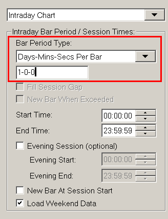

Home >> (Table of Contents) Help/Frequently Asked Questions >> Help topic 47: Number Of Trades, Volume or Range Bar Charts Do Not Match Setting or Are Not Accurate or Are Inconsistent
Number Of Trades, Volume or Range Bar Charts Do Not Match Setting or Are Not Accurate or Are Inconsistent
- General Information and Related Settings
- Effect of Missing Number of Trades or Volume Data
- Variation Between Number Of Trades Bar Charts
- Last Bar in Chart Exceeding Range
- Repeating Bars with Number Of Trades or Volume Bars
- Recommended Services
- How Price Display Format Affects Range Bar Charts
- Why the Open Value of a Bar Can Be Within the Range of the Prior Bar for Range Charts
- Range Bars Do Not Have Specified Range
- Price Changes Bars Not Accurate
- Differences Due to Chart Duplication or Reloading
General Information and Related Settings
Sierra Chart supports data from multiple Data and Trading services. The historical Intraday data and data quality from these services differs among them. The data from a service affects the accuracy of Number of Trades, Volume, Range, Reversal, Renko, Delta Volume, Price Change, Point and Figure Bars in a chart.
There are also some software settings that are necessary to ensure accurate Number of Trades, Volume, Range, Reversal, Renko, Delta Volume, Price Change, Point and Figure Bars in a chart.
This help topic is about the accuracy and consistency of Number of Trades, Volume, Range, Reversal, Renko, Delta Volume, Price Change, Point and Figure Bars in a chart and when comparing them to other charts within the same instance of Sierra Chart, other instances of Sierra Chart, or different services.
This help topic is long, although it explains all of this.
For accurate charts of these types, follow the instructions below:
- Select Chart >> Chart Settings.
- All of the settings in the Intraday Chart Bar Period frame need to be correct. If you are comparing to another chart of the same Symbol and also uses the same Bar Period Type (Number of Trades, Volume, Range, Reversal, Renko, Delta Volume, Price Change, Point and Figure Bars), they need to match that other chart.
- All of the settings in the Session Times frame need to be correct. If you are comparing to another chart of the same Symbol and also uses the same Bar Period Type, they need to match that other chart.
- Enable New Bar at Session Start on the Main Settings tab, unless based upon the Number of Trades, Volume Or Range setting, there are bars in the chart which will exceed 1 day or you do not want to start a new bar at the beginning of each trading day. In either of these cases make sure New Bar at Session Start is unchecked. The Session Start is Session Times >> Start Time or the Session Times >> Evening Start if using the Use Evening Session option is enabled.
- Select the Chart Data tab.
- Enable the Split Data Records (Applies to NumberOfTrades, Volume, Range Bars) option.
- Disable any Volume Filter settings you may have set by setting the filtering settings to 0.
- Set the Combine Trades into Original Summary Trade setting to No. Or unchecked.
- Press OK to close the Chart Settings window.
- The default Intraday Data Storage Time Unit that Sierra Chart uses when collecting data in real-time and downloading historical Intraday data, is 1 second. This includes all trading for a 1 second period and is combined into a single data record in the chart data file.
- To change this, select Global Settings >> Data/Trade Service Settings >> Common Settings from the menu.
- For Number of Trades, Volume, Range, Reversal, Renko, Delta Volume, Price Change, Point and Figure Bars, you will need to set the Intraday Data Storage Time Unit to 1 Tick for the greatest accuracy.
- Press OK to close the Data/Trade Service Settings window.
- Re-download the data in the Intraday chart data file for the symbol to ensure there are complete tick by tick data records, assuming the Data or Trading service you are using provides historical Tick data. The simplest way to re-download the data is to go to the Intraday chart and select Edit >> Delete All Data And Download from the menu. This only needs to be done once for each symbol.
- For additional information about re-downloading the data in a Intraday chart data file, refer to the Re-Download Data section.
- To determine if there is tick by tick data in the Intraday chart data file, refer to Verifying Tick By Tick Data.
{kind=link}
{kind=link}
Effect of Missing Number of Trades or Volume Data
{kind=link}
Bars in a chart based upon a Number of Trades or Volume setting which are built from data records that do not contain the Number of Trades (used by Number Of Trades bars) or Volume (used by Volume bar charts) per record will be based upon the Days - Minutes - Seconds per bar setting, even if you have a Number of Trades or Volume Per Bar setting greater than 0.
This is because it is not possible to build Number Of Trades or Volume bars from data where the number of trades or volume per record is not known. If there is a single data record for each individual trade, then the Number of Trades will be 1 and will be known.
To see what data there is in the chart data file, select Edit >> Edit/Download Data - Intraday Chart. Some Data and Trading services do not provide the Number of Trades per historical data record. Volume data may not be available with historical data records either for various reasons. Also, in the case of Interactive Brokers, they may provide records with no Number of Trades or Volume data apparently at times when there is no trading.
The recommended solution to this is to refer to the instructions in the Eliminating the Reliance on Days-Minutes-Seconds section below.
The above described issue will not happen if the Number of Trades or Volume per historical record is known.
Eliminating the Reliance on Days-Minutes-Seconds
To eliminate above described issue completely and only advance to a new bar when the number of Trades or Volume per bar per bar has been met, even with data records of zero number of Trades or Volume, then set the Days-Minutes-Seconds setting to 2-0-0 by following the steps below. In many cases this is the best thing to do in case you do have unexpected data records without Number of Trades or Volume data.
- Select Chart >> Chart Settings on the menu.
- Set the Intraday Bar Period >> Bar Period Type to Days-Mins-Secs and specify a value of 2-0-0 (which means 2 days).
- Set the Bar Period Type back to Volume Per Bar or Number of Trades per Bar and specify the corresponding value in the edit box below.
- Press OK.
Variation Between Number Of Trades Bar Charts
Number of Trades bars are based upon the historical and real-time trades received from the data or trading service you are using. If the data or trading service does not deliver every trade or the trade data varies compared to another service or another connection to the same service, then when you compare a Number of Trades bar chart with identical settings to another Number of Trades bar chart sourced from a different service or a different connection to the same service, they probably will not exactly look the same.
This is an inherent issue with Number of Trades bars in general. If you are trying to get two Number of Trades bar charts to match with a friend and the service you are both using does not consistently deliver trades across different connections, then it is an impossible task to get them to match. It becomes even more difficult if you are using different Data or Trading services.
Last Bar in Chart Exceeding Range
Number of Trades, Volume, Range, or Renko chart bars can split the underlying data records in an Intraday data file when those data records are greater than 1 Tick or in the case of Volume bars, when the volume exceeds the specified volume per bar.
When the Global Settings >> Data/Trade Service Settings >> Intraday Data Storage Time Unit is not set to 1 Tick and is a greater amount of time, then this splitting cannot occur until that data record is complete. For example if the Intraday Data Storage Time Unit is set to 1 Minute, then the splitting cannot occur until that one minute data record is complete.
Therefore in this particular case, an issue you will notice during real time chart updating and during a replay is that the current bar in the chart can exceed the specified number of trades, volume, or price range in the case of Range and Renko bars until the current data record from the Intraday data file is complete and there is a new data record being read. At that time the splitting of the data record will occur and the last chart bar will be adjusted according to the chart bar settings and a new bar will be added to the chart.
To set the Intraday Data Storage Time Unit to 1 Tick, refer to Tick by Tick Data Configuration.
Additionally, for 100% accurate Number of Trades, Volume, Range, Reversal, Renko, Delta Volume, Price Change, Point and Figure Bars, it is necessary for the Global Settings >> Data/Trade Service Settings >> Intraday Data Storage Time Unit to be set to 1 Tick. This is in addition to also having having 1 Tick historical data records as well.
Repeating Bars with Number of Trades or Volume Bars
When the underlying data records in a data file are not a single tick and you are using Number of Trades or Volume bars, then one issue you may notice is that the bars in the chart repeat and be the same at various locations. This is due to the record splitting that occurs to make each bar a certain Number of Trades or Volume.
You may also notice repeating bars with Volume based bars even with tick by tick data if you have a low Volume setting per bar or there is a very large volume for an individual trade. This is because if a single trade data record has a volume that exceeds the Volume setting for the bars, you will see it be split and repeat.
Refer to the images below for examples.
In addition to doing what is recommended in the General Information and Related Settings section on this page, select Chart >> Chart Settings >> Chart Data. Disable the Split Data Records option to prevent these repeating bars.
It is necessary in this case that Sierra Chart is set to a Tick By Tick Data Configuration.
{kind=link}
{kind=link}
Recommended Services
For the most accurate Number of Trades, Volume and Range bar charts, you will need to use one of the Sierra Chart provided Data Services.
It is important to understand that Number of Trades, Volume and Range bars are very sensitive to the underlying data you are using. And the problem you may experience with them is not due to a problem with Sierra Chart, rather the underlying data from the Data or Trading service you are using.
Another issue is that exchanges may bundle many trades into one. Therefore, Number of Trades bars are not necessarily representative of the actual volume of trading activity. Generally this is true. Although, it is not 100% precise.
How Price Display Format Affects Range Bar Charts
Accurate construction of range bars depends upon the Price Display Format in the Chart settings window for the chart. The price display format needs to be set so that all decimal places of the underlying data in the chart are displayed. Here are three screenshots of the same chart, EURJPY with a range bar setting of 0.1, but three different price display formats:
- With a price display format of 0.01.
- With a price display format of 0.001.
- With a price display format of 0.0001.
{kind=link}
{kind=link}
{kind=link}
The Range Check study at the bottom of these charts shows the actual range of the bars (High - Low). As you can see, the range is not very accurate when using a Price Display Format of 0.01, much more accurate when using the price display format of 0.001, and precise when using the price display format of 0.0001.
The reason for this has to do with the price increment of the underlying data. The symbol EURJPY for this data feed uses 3 decimal places (0.001). When using a price display format less precise than this (such as 0.01), that extra precision will not be available to be used for the range bar calculations.
However, the prices for the symbol EURJPY for this data feed are implicitly the bid/ask average, which means there could be prices in the chart half way between a minimum price increment. Because of this extra half-increment, an extra decimal place for a total of four decimal places (0.0001) is needed for real precise range bar calculations. Any more decimal places are unnecessary.
Why the Open Value of a Bar Can Be Within the Range of the Prior Bar for Range Charts
There are 3 reasons why the opening value of a range bar may be within the range of the prior bar. Normally with range bar charts this will not be the case because the specified range has to be exceeded before beginning a new bar. Therefore the open value will be outside the range of the prior range bar.
- In Chart >> Chart Settings you have the Intraday Bar Period >> Bar Period Type set to Range per Bar - New Bar on Range Met enabled. You will need to use Range per Bar - Standard instead. With Range per Bar - New Bar on Range Met, a new range bar will start as soon as the specified bar range has been met even if trading continues within the range.
- A new trading session has begun and you have New Bar at Session Start enabled in Chart >> Chart Settings. This will cause the current range bar to be stopped and the new one will begin. This is something to be aware of.
- You do not have tick by tick data in your data file. To get tick by tick data, follow the instructions in the General Information and Related Settings section on this page. However, rather than setting the Intraday Data Storage Time Unit at 1 Tick as explained, consider using 1 Second because using 1 Tick will increase the time to load chart data, increase the data file size and overall increase CPU usage. Therefore, you have to consider whether a small slight inaccuracy which generally is of little significance, is worth the overhead of working with 1 Tick data. It may not be worth the overhead.
Range Bars Do Not Have Specified Range
When the Chart >> Chart Settings >> Bar Period Type in a chart is set to Range Per Bar*, and the chart bars do not have the specified range, it can be for one of the following reasons.
For example, if the range setting is 1.0 as an actual price and the chart bars have a lower range than this.
- Chart >> Chart Settings >> Graph Draw Type is set to Candlestick Body Only. Change it to OHLC Bars or Candlestick Bars.
- Chart >> Chart Settings >> New Bar at Session Start is enabled. This will cause the bar prior to the first bar of the trading day to possibly have a shorter range than the specified range. This option must be disabled.
- Chart >> Chart Settings >> Chart Data >> Split Data Records is disabled. This needs to be enabled for Range bars when the underlying data records in the chart data file have a timeframe greater than 1 Tick. When this option is not enabled and the underlying data records have a timeframe greater than 1 Tick, then Range bars can have a larger range than is specified.
Price Changes Bars Not Accurate
If Price Changes Bars are not accurate and include more price changes than the setting, this can be due to the Historical Intraday chart data records not being 1 Tick each.
In this particular case, refer to the instructions in the General Information and Related Settings section.
{kind=link}
Differences Due to Chart Duplication or Chart Reloading
For a chart that uses Number of Trades, Volume, Range, Reversal, Renko, Delta Volume, Price Change, Point and Figure Bars, when it is duplicated or reloaded, the number of days loaded in that duplicated chart will then match the Days to Load for Intraday/Historical Chart Data Type setting in Chart >> Chart Settings >> Data Limiting.
The original chart can have more data loaded in the chart because as it updates in real time over time, additional bars are added to the chart which can cause the data loaded to exceed the Days to Load setting.
In this particular case when Chart >> Chart Settings >> Session Times >> New Bar at Session Start is not enabled, then this will result in the Number of Trades, Volume, Range, Reversal, Renko, Delta Volume, Price Change, Point and Figure Bars in the duplicated chart looking different compared to the original chart.
To make the charts look the same after duplication, go to the original chart and select Chart >> Reload and Recalculate. You will also need to do this on the duplicated chart, if it was not recently duplicated.
To ensure the Number of Trades, Volume, Range, Reversal, Renko, Delta Volume, Price Change, Point and Figure Bars remain the same, when reloading the chart for whatever reason, first make sure that Chart >> Chart Settings >> Session Times >> New Bar at Session Start is set to Yes.
Optional: Set Chart >> Chart Settings >> Data Limiting >> Load Data Limiting Method to Use Date Range. Set Date Range From to the first date you want loaded in the chart. The chart bars will then remain consistent after the chart is reloaded.
*Last modified Wednesday, 22nd February, 2023.